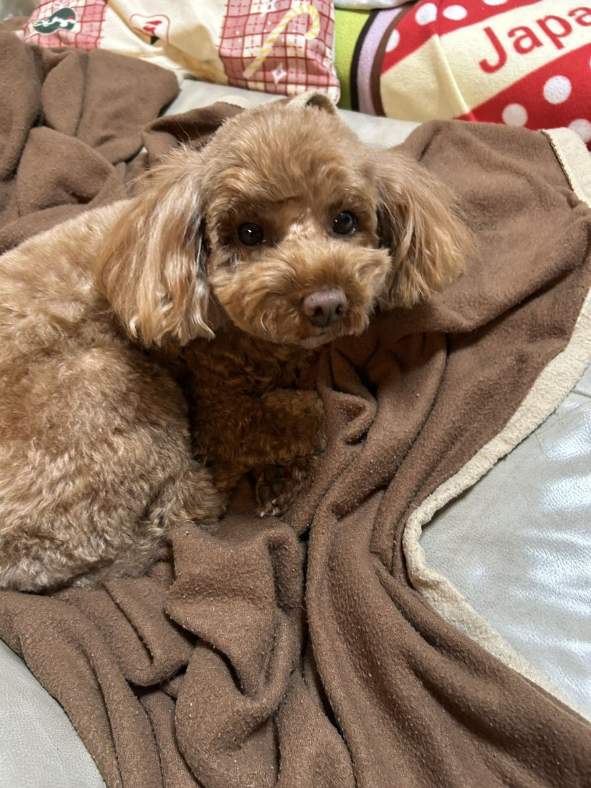
緊急のお願い
愛犬が重い貧血と闘っています。
輸血のためのドナー犬を探しています。
笹谷靖
笹谷多何子
笹谷拓
笹谷実南
トイプードル / 2021年生まれ / 女の子
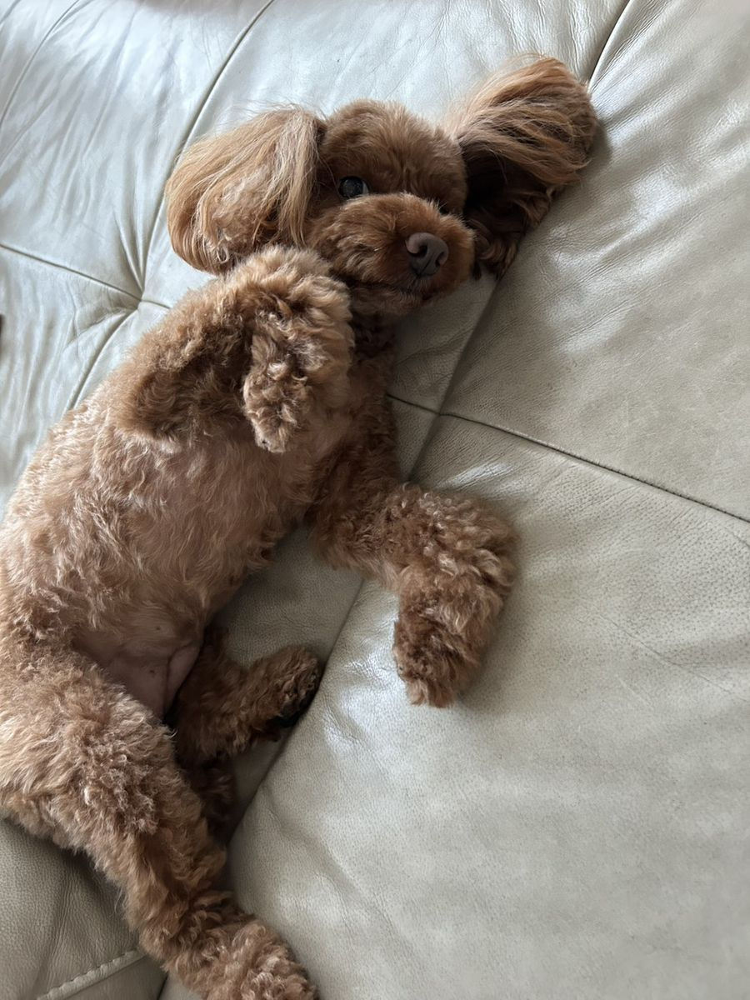
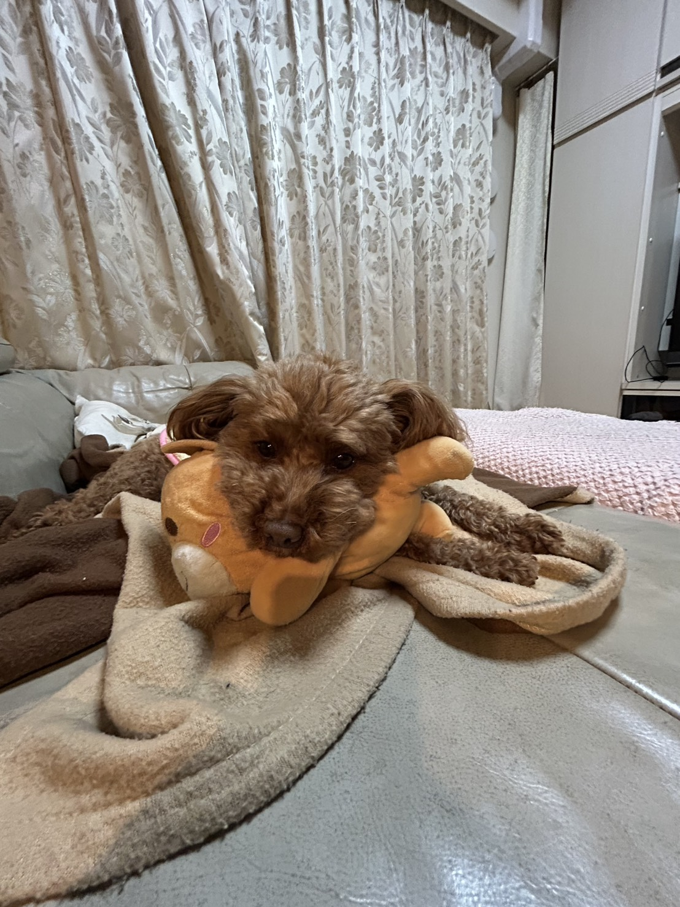
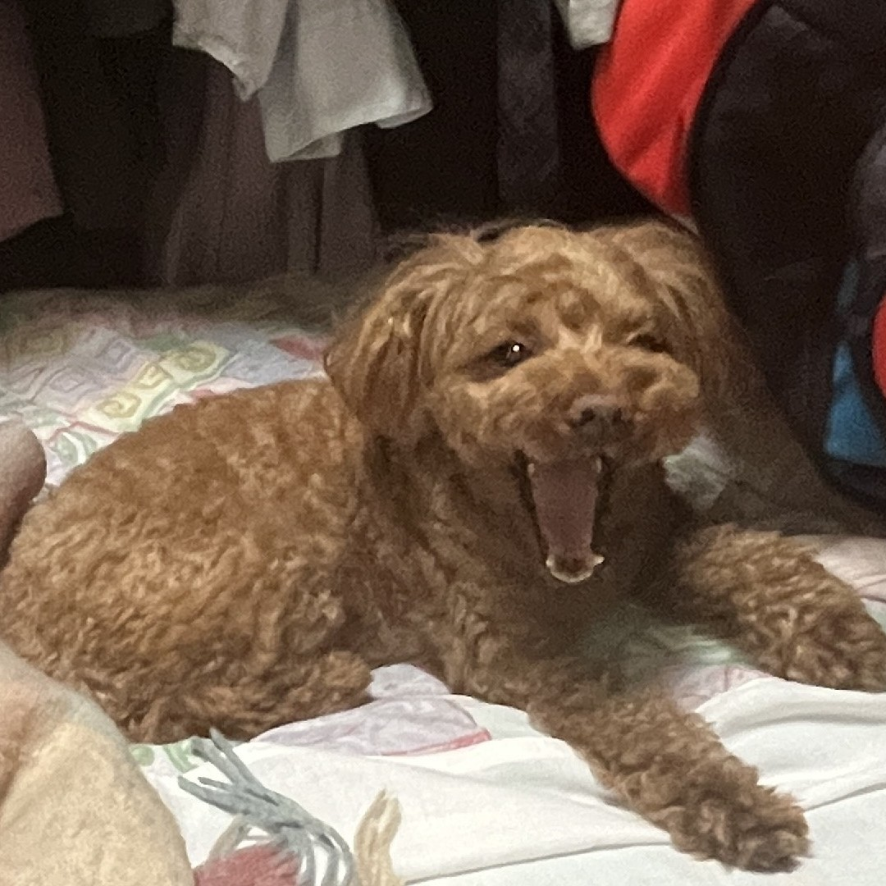
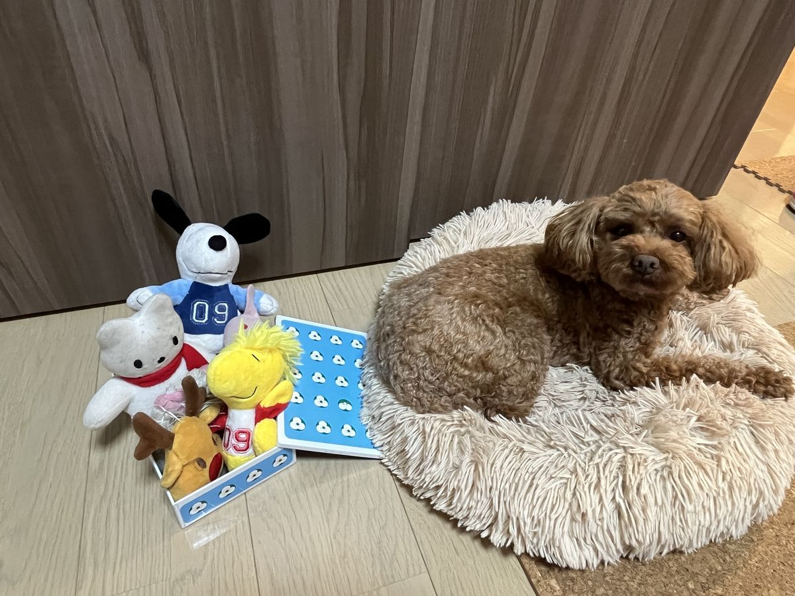
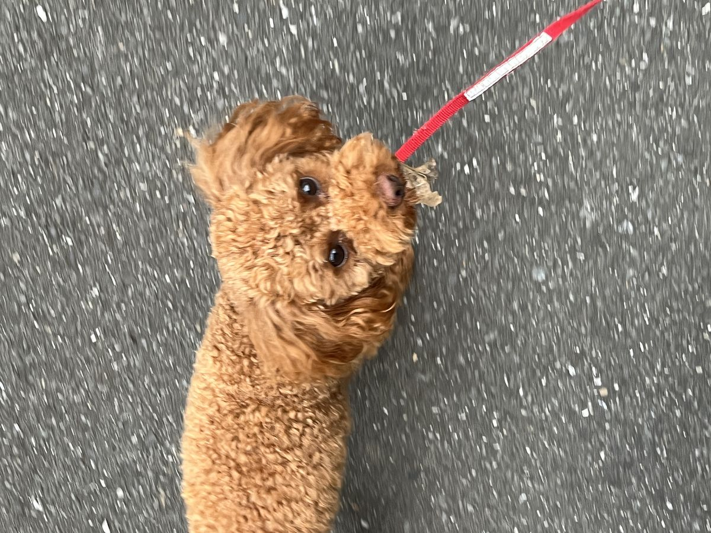
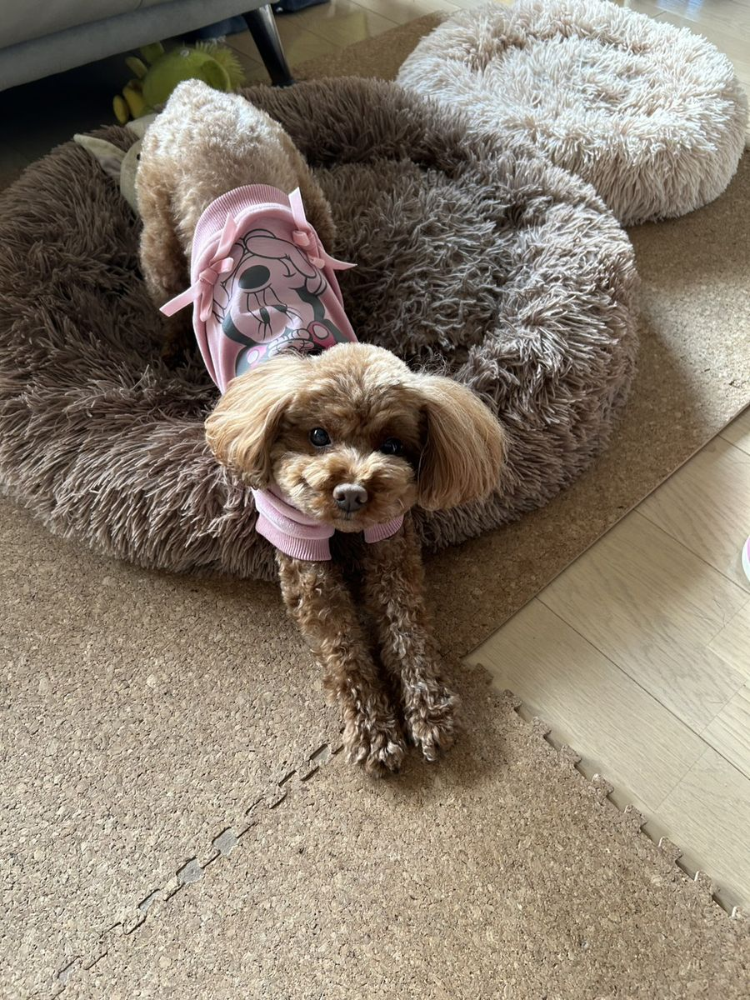
ティーちゃんは、家族にとにかく甘えん坊な子です。 お散歩も好きだけど、帰り道に家が見えるとダッシュで帰ろうとするくらい、おうちが大好き。 家族以外にはちょっと怖がりで、家の中にもいまだに怖くて入れない部屋があるほど。 お姉ちゃん犬のアンちゃんと一緒に、毎日のんびり暮らしていました。
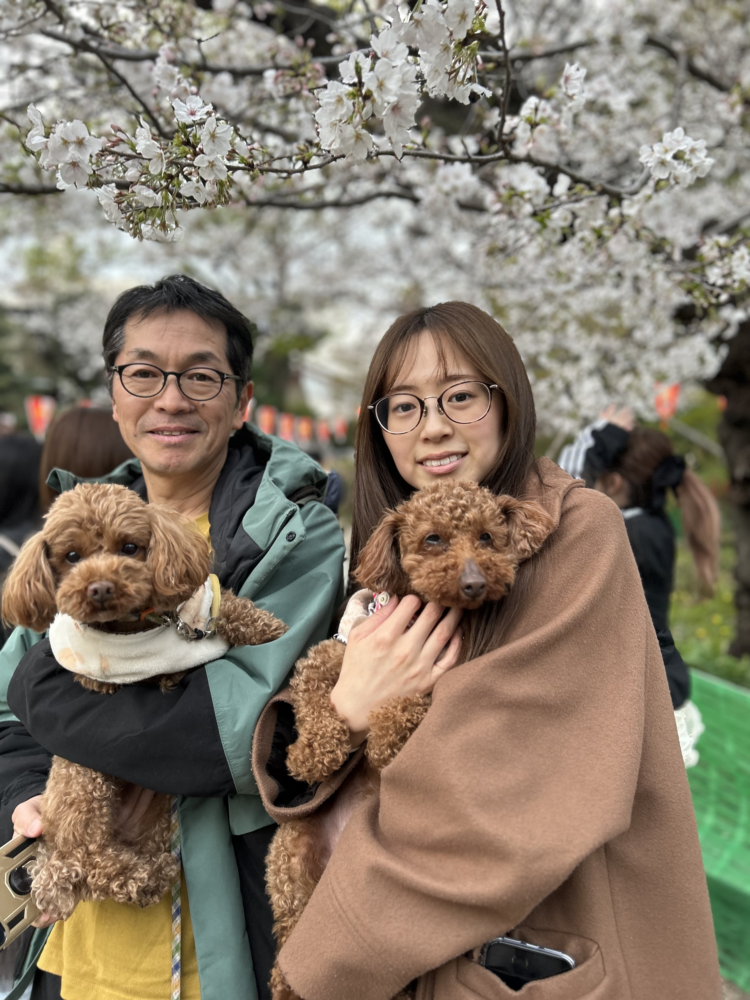
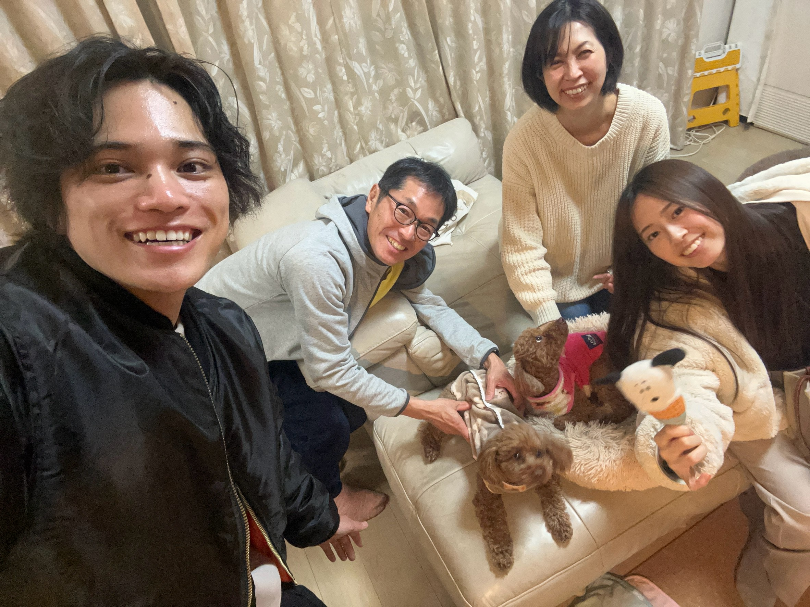
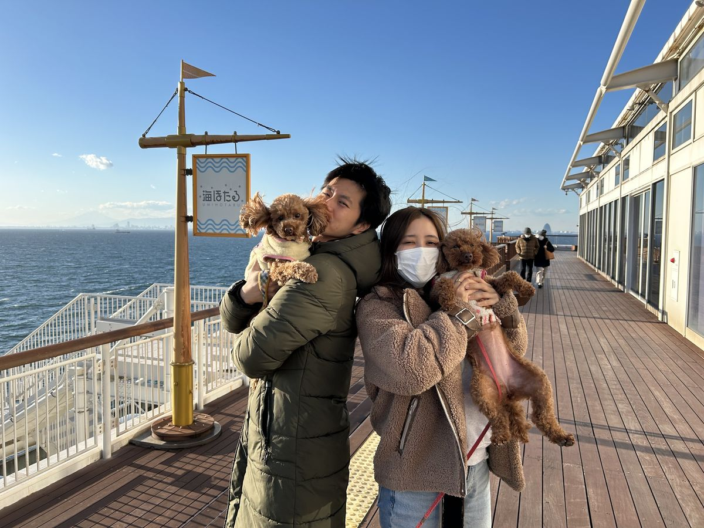
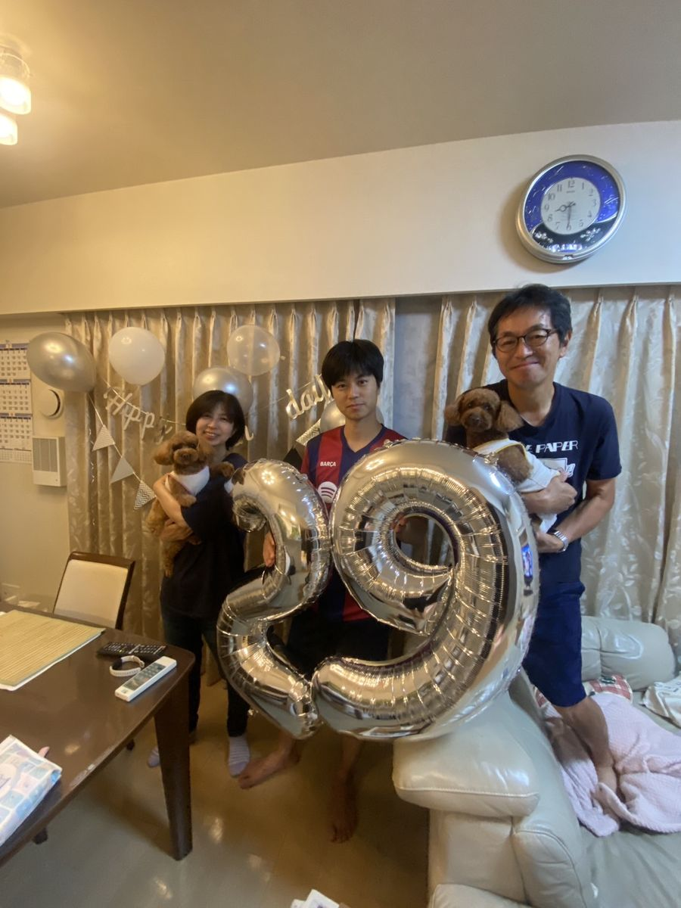
ソファに登る前の、意味のない助走準備
怖い部屋だけど、おもちゃを取りに来た
突然の発症から、わずか2日で命の危機に
変な咳をするようになり、いつもより元気がない。明日病院に行こうと思っていました。
朝の散歩で血尿が出て、急いで病院へ。 検査の結果、PCV（赤血球の割合）が26.1%まで低下していることが判明。 自分の免疫が赤血球を壊してしまう病気「IMHA」と診断され、即入院になりました。
IMHAとは：自分の免疫システムが、自分の赤血球を異物と勘違いして壊してしまう病気です。治療薬はありますが、効果が出るまで1〜2週間かかります。
面会時間前に病院から電話。PCVが想定外の7.9%にまで下がり、緊急で輸血の準備に入っていると。 急いで病院に駆けつけると、ティーちゃんは呼びかけると目は開けるものの、立ち上がることができない状態でした。
善意で登録されていたドナー犬のおかげで輸血を受けることができ、午後には立ち上がれるまで回復。 夜間対応ができる病院（ライフメイト動物医療センター文京）に、酸素を吸わせながら車で転院しました。
今の状況：治療薬の効果が出るまでの1〜2週間、輸血で命をつなぐ必要があります。病院のドナーだけでは足りず、私たち家族でもドナーを探しています。
輸血のおかげで少しずつ元気を取り戻していますが、薬が効いてくるまでまだまだ輸血が必要です
入院初日（3/15）
IMHAと診断され、ICU（酸素室）に入りました。
入院二日目の朝（3/16）
PCVが7.9%まで急落。呼びかけに目は開けるものの、立ち上がれない状態に。
新しい病院への移動
酸素の袋を口に当てながら、家族の車で転院しました。
輸血後、元気が出てきた
輸血のおかげで立ち上がれるようになりました。輸血は確かに効果があります。
輸血で命をつなぐためのドナー犬を探しています
ワンちゃんにも血液型があり、適合する型（DEA 1.1 マイナス）が必要です。全犬種の約30%程度がこの型に該当します。
ほとんどの飼い主さんはご存知ないと思いますが、かかりつけの動物病院で簡単に調べられます。
ご協力いただける方には、謝礼をお渡しさせていただきます。交通費やタクシー代ももちろん全額負担いたします。ご自宅への送迎も可能です。どうかお力をお貸しください。
輸血の際に鎮静剤を使いますが、人間が胃カメラで鎮静剤を使うのと同程度のリスクです。
大型犬を飼っていなくても
このページをシェアしていただけるだけでも大きな力になります。
ご連絡いただいてから、丁寧にご案内いたします
下記の連絡先からお気軽にご連絡ください
ご予定に合わせて、お近くの動物病院で簡易検査していただくか、東京都文京区白山の病院で検査できます
検査費用はもちろん全てこちらで負担いたします。